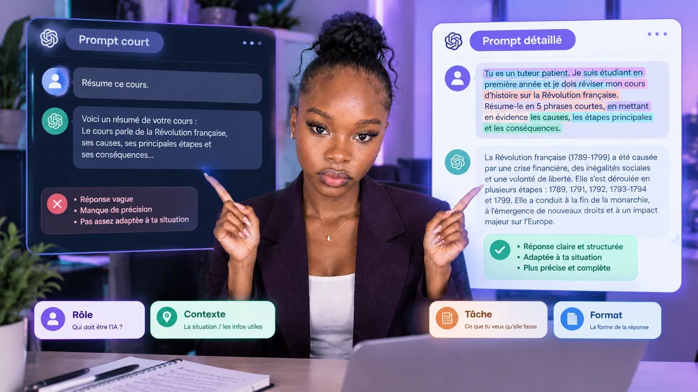
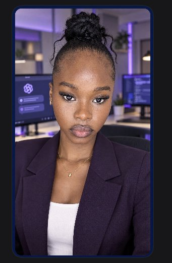

<title>Prompt en 4 éléments</title>
<meta name="claude:viewport-fit-sides" content="cover">
<link rel="preconnect" href="https://fonts.googleapis.com">
<link rel="preconnect" href="https://fonts.gstatic.com" crossorigin>
<link rel="stylesheet" href="https://fonts.googleapis.com/css2?family=Bricolage+Grotesque:opsz,wght@12..96,600;12..96,800&family=Figtree:wght@400;500;600&display=swap">
<style>
/* Concept : page unique, ambiance bureau violet nuit du kit visuel ; une couleur par élément du prompt (rôle violet, contexte vert, tâche orange, format bleu). */
:root{
  --bg:#FBFAFF; --surface:#FFFFFF; --soft:#F1EEFF; --fg:#131D50; --muted:#4A4F7A; --line:#E1DCF8;
  --role:#6E60EF; --ctx:#1F8F78; --task:#D2691F; --fmt:#2F6FD6;
  --role-bg:#E3DFFC; --ctx-bg:#CDEFE6; --task-bg:#FFE0CB; --fmt-bg:#D5E4FB;
  --dark:#131D50; --on-dark:#FFFFFF; --on-dark-muted:#CFC9F5;
  --f-display:"Bricolage Grotesque","Trebuchet MS",sans-serif; --f-body:"Figtree","Segoe UI",Arial,sans-serif;
}
@media (prefers-color-scheme:dark){:root:not([data-theme="light"]){
  --bg:#0D1238; --surface:#161C4A; --soft:#1B2257; --fg:#F1EFFF; --muted:#B9B6E3; --line:#2E3677;
  --role:#9A8FFF; --ctx:#4FCDB0; --task:#FF9D5C; --fmt:#78AEFF;
  --role-bg:#2E2A75; --ctx-bg:#14473F; --task-bg:#5A3417; --fmt-bg:#1B3A6E;
  --dark:#080C2B; color-scheme:dark}}
:root[data-theme="dark"]{
  --bg:#0D1238; --surface:#161C4A; --soft:#1B2257; --fg:#F1EFFF; --muted:#B9B6E3; --line:#2E3677;
  --role:#9A8FFF; --ctx:#4FCDB0; --task:#FF9D5C; --fmt:#78AEFF;
  --role-bg:#2E2A75; --ctx-bg:#14473F; --task-bg:#5A3417; --fmt-bg:#1B3A6E;
  --dark:#080C2B; color-scheme:dark}
*{box-sizing:border-box}
html{scroll-behavior:smooth}
body{background:var(--bg);color:var(--fg);font:400 17px/1.6 var(--f-body);margin:0}
.wrap{max-width:1040px;margin:0 auto;padding-inline:max(16px,env(safe-area-inset-left,0px)) max(16px,env(safe-area-inset-right,0px))}
section{padding-block:72px}
h1,h2,h3{font-family:var(--f-display);line-height:1.1;text-wrap:balance;margin:0}
h1{font-size:clamp(38px,6vw,64px);font-weight:800;letter-spacing:-.02em}
h2{font-size:clamp(28px,4vw,40px);font-weight:800;letter-spacing:-.01em;margin-bottom:12px}
h3{font-size:21px;font-weight:600}
p{margin:0}
.eyebrow{font-size:13px;font-weight:600;letter-spacing:.12em;text-transform:uppercase;color:var(--role);margin-bottom:14px}
.lead{font-size:19px;color:var(--muted);max-width:60ch}
a{color:inherit}
.btn{display:inline-block;background:var(--role);color:#fff;font-weight:600;text-decoration:none;padding:14px 26px;border-radius:12px;border:0;font:600 17px var(--f-body);cursor:pointer}
.btn:hover{filter:brightness(1.08)}
.btn.ghost{background:transparent;color:var(--fg);border:1.5px solid var(--line)}
:focus-visible{outline:3px solid var(--fmt);outline-offset:3px}
.top{display:flex;justify-content:space-between;align-items:center;padding-block:18px;gap:12px}
.brand{font-family:var(--f-display);font-weight:800;font-size:18px}
.top nav{display:flex;gap:22px;font-size:15px;font-weight:500}
.top nav a{text-decoration:none;color:var(--muted)}
.top nav a:hover{color:var(--fg)}
@media(max-width:640px){.top nav{display:none}}

/* hero */
.hero{display:grid;grid-template-columns:1.05fr .95fr;gap:48px;align-items:center;padding-block:40px 72px}
.hero .lead{margin:20px 0 28px}
.hero-cta{display:flex;gap:12px;flex-wrap:wrap}
.hero-meta{display:flex;gap:20px;flex-wrap:wrap;margin-top:28px;font-size:15px;color:var(--muted)}
.hero-meta b{color:var(--fg)}
.hero img{width:100%;aspect-ratio:1/1.02;object-fit:cover;border-radius:28px;display:block}
@media(max-width:820px){.hero{grid-template-columns:1fr;gap:32px}}

/* problem */
.band{background:var(--soft)}
.cols3{display:grid;grid-template-columns:repeat(3,1fr);gap:20px;margin-top:36px}
.cols3>*{min-width:0}
@media(max-width:820px){.cols3{grid-template-columns:1fr}}
.card{background:var(--surface);border:1px solid var(--line);border-radius:18px;padding:26px}
.card p{color:var(--muted);margin-top:8px;font-size:16px}
.demo{display:grid;grid-template-columns:1fr 1fr;gap:20px;margin-top:36px}
.demo>*{min-width:0}
@media(max-width:820px){.demo{grid-template-columns:1fr}}
.chat{border-radius:18px;padding:22px;border:1px solid var(--line);background:var(--surface)}
.chat small{display:block;font-size:12px;font-weight:600;letter-spacing:.1em;text-transform:uppercase;color:var(--muted);margin-bottom:10px}
.bubble{background:var(--soft);border-radius:12px;padding:12px 14px;margin-bottom:10px;font-size:16px}
.bubble.ai{background:transparent;border:1px dashed var(--line);color:var(--muted)}
.tag{display:inline-block;font-size:13px;font-weight:600;border-radius:99px;padding:3px 12px}
.tag.bad{background:var(--task-bg);color:var(--task)}
.tag.good{background:var(--ctx-bg);color:var(--ctx)}

/* persona + goals */
.persona{display:grid;grid-template-columns:260px 1fr;gap:28px;margin-top:36px}
.persona>*{min-width:0}
@media(max-width:820px){.persona{grid-template-columns:1fr}}
.sam{background:var(--dark);color:var(--on-dark);border-radius:22px;padding:28px}
.sam h3{font-size:30px}
.sam p{color:var(--on-dark-muted);font-size:15px;margin-top:6px}
.rows{display:grid;gap:12px}
.row{display:grid;grid-template-columns:120px 1fr;gap:14px;background:var(--surface);border:1px solid var(--line);border-radius:14px;padding:16px 20px}
.row b{color:var(--role);font-size:15px}
@media(max-width:480px){.row{grid-template-columns:1fr;gap:2px}}
.goals{display:grid;gap:14px;margin-top:36px}
.goal{display:grid;grid-template-columns:150px 1fr;gap:20px;align-items:center;background:var(--surface);border:1px solid var(--line);border-radius:16px;padding:18px 22px}
.verb{font-family:var(--f-display);font-weight:800;font-size:24px;color:#fff;border-radius:12px;padding:12px 16px;text-align:center}
.goal:nth-child(1) .verb{background:var(--role)}.goal:nth-child(2) .verb{background:var(--ctx)}.goal:nth-child(3) .verb{background:var(--task)}
@media(max-width:640px){.goal{grid-template-columns:1fr}}

/* modules */
.mods{display:grid;gap:18px;margin-top:36px}
.mod{background:var(--surface);border:1px solid var(--line);border-radius:20px;padding:28px;display:grid;grid-template-columns:130px 1fr;gap:26px}
.mod>*{min-width:0}
@media(max-width:640px){.mod{grid-template-columns:1fr;gap:12px}}
.mod .time{font-family:var(--f-display);font-weight:800;font-size:44px;line-height:1}
.mod .time span{display:block;font-family:var(--f-body);font-size:13px;font-weight:600;letter-spacing:.1em;text-transform:uppercase;color:var(--muted);margin-bottom:6px}
.mod:nth-child(1) .time{color:var(--role)}.mod:nth-child(2) .time{color:var(--ctx)}.mod:nth-child(3) .time{color:var(--task)}
.mod ul{margin:12px 0 0;padding-left:20px;color:var(--muted)}
.mod li{margin-bottom:4px}
.total{margin-top:18px;font-weight:600}

/* extrait */
.prompt{font-size:20px;line-height:1.9;background:var(--surface);border:1px solid var(--line);border-radius:18px;padding:26px;margin-top:30px}
.hl{padding:3px 6px;border-radius:6px;font-weight:500}
.hl.r{background:var(--role-bg)}.hl.c{background:var(--ctx-bg)}.hl.t{background:var(--task-bg)}.hl.f{background:var(--fmt-bg)}
.legend{display:grid;grid-template-columns:repeat(4,1fr);gap:12px;margin-top:16px}
.legend>*{min-width:0}
@media(max-width:820px){.legend{grid-template-columns:1fr 1fr}}
.chip{border-radius:14px;padding:14px 16px;font-size:15px}
.chip b{display:block;font-size:17px;font-family:var(--f-display)}
.chip.r{background:var(--role-bg)}.chip.c{background:var(--ctx-bg)}.chip.t{background:var(--task-bg)}.chip.f{background:var(--fmt-bg)}
.chip.r b{color:var(--role)}.chip.c b{color:var(--ctx)}.chip.t b{color:var(--task)}.chip.f b{color:var(--fmt)}

/* builder */
.build{display:grid;grid-template-columns:1fr 1fr;gap:24px;margin-top:32px}
.build>*{min-width:0}
@media(max-width:820px){.build{grid-template-columns:1fr}}
.field{display:block;margin-bottom:14px}
.field span{display:block;font-weight:600;font-size:15px;margin-bottom:5px}
.field small{font-weight:400;color:var(--muted)}
.field.r span{color:var(--role)}.field.c span{color:var(--ctx)}.field.t span{color:var(--task)}.field.f span{color:var(--fmt)}
.field textarea{width:100%;font:400 16px/1.5 var(--f-body);color:var(--fg);background:var(--surface);border:1.5px solid var(--line);border-radius:12px;padding:10px 12px;resize:vertical;min-height:62px}
.field.r textarea:focus{border-color:var(--role)}.field.c textarea:focus{border-color:var(--ctx)}.field.t textarea:focus{border-color:var(--task)}.field.f textarea:focus{border-color:var(--fmt)}
.out{background:var(--dark);color:var(--on-dark);border-radius:20px;padding:26px;align-self:start}
.out small{display:block;font-size:12px;font-weight:600;letter-spacing:.1em;text-transform:uppercase;color:var(--on-dark-muted);margin-bottom:12px}
#result{font-size:18px;line-height:1.7;min-height:120px}
#result .r,#result .c,#result .t,#result .f{padding:2px 5px;border-radius:5px;color:#131D50}
#result .r{background:#CFC8FF}#result .c{background:#A8E6D6}#result .t{background:#FFD0AE}#result .f{background:#B8D3FA}
.status{margin-top:16px;font-size:15px;color:var(--on-dark-muted);min-height:24px}
.status.ok{color:#8BE3C8;font-weight:600}
.out .btn{margin-top:14px;padding:10px 20px;font-size:15px}

/* video */
.video{position:relative;max-width:760px;margin:32px auto 0;border-radius:20px;overflow:hidden;background:#000}
.video video{display:block;width:100%;height:auto}
.badge{position:absolute;top:12px;left:12px;background:var(--task);color:#fff;font-size:13px;font-weight:600;border-radius:99px;padding:5px 14px;pointer-events:none}

/* ia */
.ia{display:grid;grid-template-columns:1fr 1fr 1fr;gap:20px;margin-top:32px}
.ia>*{min-width:0}
@media(max-width:820px){.ia{grid-template-columns:1fr}}
.ia ul{margin:10px 0 0;padding-left:20px;color:var(--muted);font-size:16px}
.vis{display:grid;grid-template-columns:1fr 1fr;gap:20px;margin-top:32px}
.vis img{width:100%;border-radius:16px;display:block}
.swatches{display:flex;gap:14px;flex-wrap:wrap;margin-top:28px}
.sw{display:flex;align-items:center;gap:8px;font-size:13px;color:var(--muted)}
.sw i{width:28px;height:28px;border-radius:50%;border:1px solid var(--line);display:block}
@media(max-width:640px){.vis{grid-template-columns:1fr}}

/* cta */
.cta{background:var(--dark);color:var(--on-dark);text-align:left}
.cta h2{font-size:clamp(30px,5vw,52px)}
.cta .lead{color:var(--on-dark-muted)}
.news{margin-top:28px;border:1px solid #3A4290;background:#1C2468;border-radius:16px;padding:20px 24px;max-width:640px;font-style:italic}
.news small{display:block;font-style:normal;font-size:12px;font-weight:600;letter-spacing:.1em;text-transform:uppercase;color:var(--on-dark-muted);margin-bottom:6px}
.cta .btn.ghost{color:#fff;border-color:#4B54A8}
footer{padding-block:28px;font-size:14px;color:var(--muted)}
.theme{background:none;border:1px solid var(--line);color:var(--muted);border-radius:99px;padding:5px 14px;font:500 13px var(--f-body);cursor:pointer}
@media(prefers-reduced-motion:reduce){html{scroll-behavior:auto}}
</style>

<header class="wrap top">
  <div class="brand">Prompt en 4 éléments</div>
  <nav aria-label="Navigation">
    <a href="#modules">Les modules</a><a href="#video">Vidéo</a><a href="#essayer">Essayer</a><a href="#ia">Coulisses</a>
  </nav>
  <button class="theme" id="theme" type="button">Mode sombre</button>
</header>

<main>
<div class="wrap hero">
  <div>
    <p class="eyebrow">Micro-formation · 15 minutes</p>
    <h1>Écrire un bon prompt en 4 éléments</h1>
    <p class="lead">Rôle, contexte, tâche, format : donne à l'IA ce qu'il lui faut pour répondre vraiment à ta demande.</p>
    <div class="hero-cta">
      <a class="btn" href="#modules">Commencer la formation</a>
      <a class="btn ghost" href="#video">Voir la vidéo</a>
    </div>
    <div class="hero-meta"><span><b>3</b> modules</span><span><b>15</b> min</span><span>Pour tous les étudiants, toutes filières</span></div>
  </div>
  
</div>

<section class="band" id="probleme"><div class="wrap">
  <p class="eyebrow">Le problème</p>
  <h2>Tu poses une question à l'IA, la réponse tombe à côté</h2>
  <p class="lead">Ça arrive à presque tout le monde, et ce n'est pas un hasard.</p>
  <div class="cols3">
    <div class="card"><h3>Des réponses inégales</h3><p>Une question courte donne parfois un très bon résultat, parfois un résultat hors sujet.</p></div>
    <div class="card"><h3>On ne sait pas quoi dire</h3><p>Qui doit être l'IA ? Quelle situation décrire ? Quelle forme de réponse demander ?</p></div>
    <div class="card"><h3>On ne sait pas quoi corriger</h3><p>Sans méthode, impossible de savoir quelle partie du message améliorer.</p></div>
  </div>
  <div class="demo">
    <div class="chat"><small>Prompt court <span class="tag bad">Réponse vague</span></small>
      <div class="bubble">Résume ce cours.</div>
      <div class="bubble ai">Voici un résumé de votre cours : le cours parle de la Révolution française, ses causes, ses principales étapes et ses conséquences…</div></div>
    <div class="chat"><small>Prompt à 4 éléments <span class="tag good">Adaptée à toi</span></small>
      <div class="bubble">Tu es un tuteur patient. Je suis étudiant en première année et je dois réviser mon cours d'histoire sur la Révolution française. Résume-le en 5 phrases courtes, en mettant en évidence les causes, les étapes principales et les conséquences.</div>
      <div class="bubble ai">La Révolution française (1789-1799) a été causée par une crise financière, des inégalités sociales et une volonté de liberté…</div></div>
  </div>
</div></section>

<section id="pour-qui"><div class="wrap">
  <p class="eyebrow">Pour qui</p>
  <h2>Sam, étudiant à l'université</h2>
  <p class="lead">Tous niveaux, toutes filières. Sam rédige, résume et explique des idées pour ses cours et son quotidien.</p>
  <div class="persona">
    <div class="sam"><h3>Sam</h3><p>Étudiant à l'université</p><p>Profil volontairement général, pour que chacun s'y reconnaisse.</p></div>
    <div class="rows">
      <div class="row"><b>Acquis</b><span>A déjà utilisé une IA, avec des questions courtes.</span></div>
      <div class="row"><b>Barrière</b><span>Ne sait pas quelles informations donner, ni pourquoi les résultats varient.</span></div>
      <div class="row"><b>Besoin</b><span>Apprendre pas à pas à construire un prompt pour n'importe quelle demande : résumer un cours, rédiger un mail…</span></div>
    </div>
  </div>
</div></section>

<section class="band" id="promesse"><div class="wrap">
  <p class="eyebrow">La promesse</p>
  <h2>À la fin, tu sauras…</h2>
  <div class="goals">
    <div class="goal"><div class="verb">Identifier</div><p>les 4 éléments d'un prompt (rôle, contexte, tâche, format) et repérer celui qui manque.</p></div>
    <div class="goal"><div class="verb">Comparer</div><p>la réponse d'un prompt court et celle d'un prompt à 4 éléments, et expliquer en une phrase d'où vient la différence.</p></div>
    <div class="goal"><div class="verb">Rédiger</div><p>un prompt complet avec les 4 éléments, puis l'ajuster après avoir lu la réponse.</p></div>
  </div>
</div></section>

<section id="modules"><div class="wrap">
  <p class="eyebrow">La formation</p>
  <h2>3 modules, 15 minutes</h2>
  <div class="mods">
    <article class="mod"><div class="time"><span>Module 1</span>4 min</div><div>
      <h3>Repérer les 4 éléments</h3>
      <ul><li>Un exemple annoté : chaque élément surligné de sa couleur</li><li>Un exercice guidé sur 2 prompts courts</li><li>Ta mission : nommer l'élément qui manque</li></ul></div></article>
    <article class="mod"><div class="time"><span>Module 2</span>4 min</div><div>
      <h3>Voir la différence</h3>
      <ul><li>La même demande (préparer un exposé), posée deux fois</li><li>Un prompt court contre un prompt à 4 éléments, côte à côte</li><li>Ta mission : écrire une phrase pour dire d'où vient la différence</li></ul></div></article>
    <article class="mod"><div class="time"><span>Module 3</span>7 min</div><div>
      <h3>Écrire son propre prompt</h3>
      <ul><li>La grille de 4 cases, une case par élément</li><li>Ta demande à toi : résumer, rédiger, expliquer</li><li>Ta mission : lire la réponse et ajuster au moins un élément</li></ul></div></article>
  </div>
  <p class="total">Durée totale : 15 minutes (4 + 4 + 7).</p>
</div></section>

<section class="band" id="extrait"><div class="wrap">
  <p class="eyebrow">Un extrait du module 1</p>
  <h2>Les 4 éléments, sur un vrai prompt</h2>
  <div class="prompt"><span class="hl r">Tu es un tuteur patient.</span> <span class="hl c">Je suis étudiant en première année et je dois réviser mon cours d'histoire.</span> <span class="hl t">Résume-le</span> <span class="hl f">en 5 phrases courtes.</span></div>
  <div class="legend">
    <div class="chip r"><b>1. Rôle</b>Qui l'IA doit être</div>
    <div class="chip c"><b>2. Contexte</b>Les infos utiles sur ta situation</div>
    <div class="chip t"><b>3. Tâche</b>Ce que l'IA doit faire</div>
    <div class="chip f"><b>4. Format</b>La forme de la réponse</div>
  </div>
  <p class="lead" style="margin-top:24px">Exercice : « Je prépare un exposé de 5 minutes pour mon cours de géographie. Aide-moi à le préparer. Donne-moi une liste de 3 parties. » Quel élément manque ? <b>Le rôle.</b></p>
</div></section>

<section id="video"><div class="wrap">
  <p class="eyebrow">La vidéo de leçon</p>
  <h2>L'idée clé en 65 secondes</h2>
  <p class="lead">Un avatar présente les 4 éléments d'un prompt clair.</p>
  <div class="video">
    <video controls preload="metadata" poster="poster.jpg" playsinline><source src="lecon.mp4" type="video/mp4">Ton navigateur ne lit pas cette vidéo.</video>
    <span class="badge">Vidéo générée avec l'IA</span>
  </div>
</div></section>

<section class="band" id="essayer"><div class="wrap">
  <p class="eyebrow">À toi de jouer</p>
  <h2>Ta grille de 4 cases</h2>
  <p class="lead">Remplis les cases, le prompt se construit à droite. Vide une case pour voir ce qui manque.</p>
  <div class="build">
    <form id="grid" onsubmit="return false">
      <label class="field r" for="f-r"><span>Rôle <small>Qui veux-tu que l'IA soit ?</small></span><textarea id="f-r" rows="2">Tu es un tuteur patient.</textarea></label>
      <label class="field c" for="f-c"><span>Contexte <small>Quelle est ta situation ?</small></span><textarea id="f-c" rows="2">Je suis étudiant en première année et je prépare un exposé de 5 minutes pour mon cours de géographie.</textarea></label>
      <label class="field t" for="f-t"><span>Tâche <small>Que doit faire l'IA ?</small></span><textarea id="f-t" rows="2">Aide-moi à le préparer.</textarea></label>
      <label class="field f" for="f-f"><span>Format <small>Sous quelle forme la réponse ?</small></span><textarea id="f-f" rows="2">Donne-moi une liste de 3 parties.</textarea></label>
    </form>
    <div class="out">
      <small>Ton prompt</small>
      <div id="result" aria-live="polite"></div>
      <div class="status" id="status"></div>
      <button class="btn" id="copy" type="button">Copier le prompt</button>
    </div>
  </div>
</div></section>

<section id="ia"><div class="wrap">
  <p class="eyebrow">Les coulisses</p>
  <h2>Comment l'IA a été utilisée</h2>
  <div class="ia">
    <div class="card"><h3>Les outils</h3><ul><li>ChatGPT : script, support, visuels</li><li>Outil d'avatar vidéo : avatar et voix</li></ul></div>
    <div class="card"><h3>Ce que l'IA a produit</h3><ul><li>Le script des 3 modules</li><li>Le support de l'apprenant</li><li>La vidéo et le kit visuel</li></ul></div>
    <div class="card"><h3>Ce qui a été vérifié</h3><ul><li>Les affirmations du script, une par une</li><li>Les réponses réellement obtenues dans les démos</li><li>Les nuances : un prompt ajusté aide, sans garantie à chaque fois</li></ul></div>
  </div>
  <div class="vis">
    
    
  </div>
  <div class="swatches" aria-label="Palette de couleurs">
    <span class="sw"><i style="background:#131D50"></i>#131D50</span><span class="sw"><i style="background:#6E60EF"></i>#6E60EF</span><span class="sw"><i style="background:#269B84"></i>#269B84</span><span class="sw"><i style="background:#E8803A"></i>#E8803A</span><span class="sw"><i style="background:#4A86E8"></i>#4A86E8</span>
  </div>
</div></section>

<section class="cta" id="cta"><div class="wrap">
  <h2>15 minutes pour que l'IA devienne vraiment utile à tes études</h2>
  <p class="lead" style="margin-top:14px">Après la formation, tu sauras poser ta demande clairement, obtenir des réponses utiles et corriger toi-même tes prompts.</p>
  <div class="hero-cta" style="margin-top:28px"><a class="btn" href="#modules">Commencer maintenant</a><a class="btn ghost" href="#essayer">Essayer la grille</a></div>
  <div class="news"><small>Newsletter de lancement</small>« Nouveau : apprends à écrire un bon prompt en 15 minutes. Rôle, contexte, tâche, format : moins de réponses à côté, plus de réponses utiles. »</div>
  <p style="margin-top:36px;font-size:28px;font-family:var(--f-display);font-weight:800">Merci ! Des questions ?</p>
</div></section>
</main>

<footer><div class="wrap">Formation créée par Mélissa, avec l'aide de l'IA (texte, avatar et vidéo), relue et vérifiée.</div></footer>

<script>
(function(){
  var ids=["r","c","t","f"],names={r:"le rôle",c:"le contexte",t:"la tâche",f:"le format"};
  var res=document.getElementById("result"),st=document.getElementById("status"),btn=document.getElementById("copy");
  function esc(s){return s.replace(/[&<>]/g,function(c){return {"&":"&amp;","<":"&lt;",">":"&gt;"}[c]})}
  function render(){
    var html=[],plain=[],missing=[];
    ids.forEach(function(k){
      var v=document.getElementById("f-"+k).value.trim();
      if(v){html.push('<span class="'+k+'">'+esc(v)+'</span>');plain.push(v)}else missing.push(names[k]);
    });
    res.innerHTML=html.length?html.join(" "):"Remplis au moins une case.";
    if(!missing.length){st.className="status ok";st.textContent="Les 4 éléments sont là."}
    else{st.className="status";st.textContent="Il manque : "+missing.join(", ")+"."}
    res.dataset.plain=plain.join(" ");
  }
  ids.forEach(function(k){document.getElementById("f-"+k).addEventListener("input",render)});
  btn.addEventListener("click",function(){
    var t=res.dataset.plain||"";
    function done(m){btn.textContent=m;setTimeout(function(){btn.textContent="Copier le prompt"},1800)}
    function fallback(){var r=document.createRange();r.selectNodeContents(res);var s=getSelection();s.removeAllRanges();s.addRange(r);done("Sélectionné : Ctrl+C")}
    try{navigator.clipboard.writeText(t).then(function(){done("Copié")},fallback)}catch(e){fallback()}
  });
  render();
  var tb=document.getElementById("theme"),root=document.documentElement;
  function dark(){var d=root.getAttribute("data-theme");return d?d==="dark":matchMedia("(prefers-color-scheme: dark)").matches}
  function label(){tb.textContent=dark()?"Mode clair":"Mode sombre"}
  tb.addEventListener("click",function(){root.setAttribute("data-theme",dark()?"light":"dark");label()});
  label();
})();
</script>
